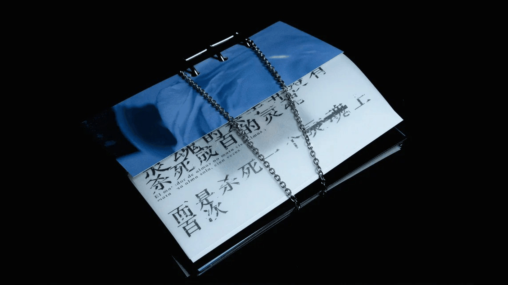
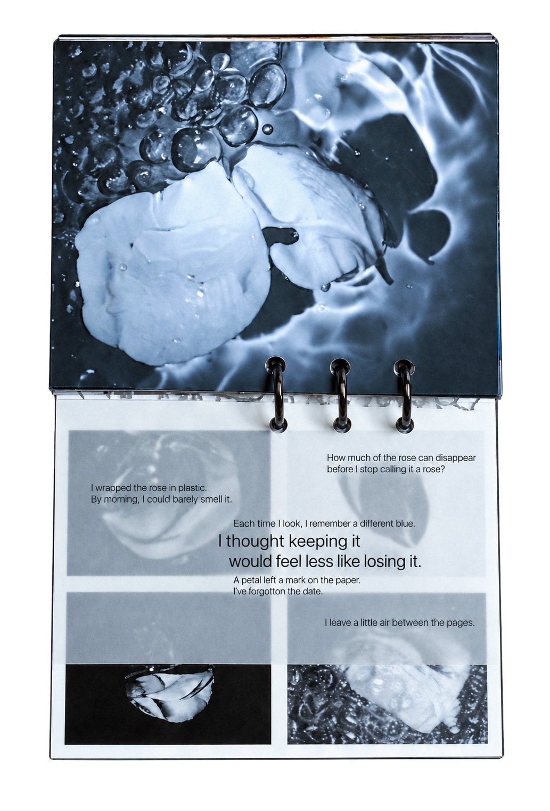
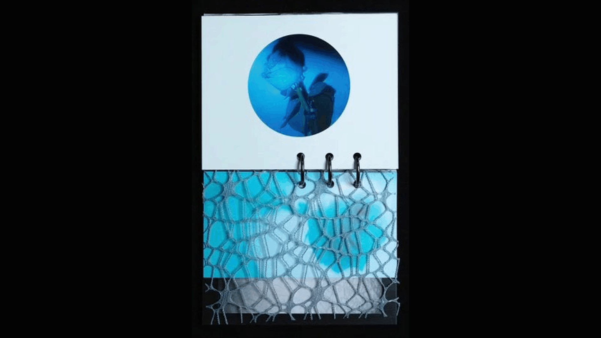

What a Rose Remembers
Overview
A ring-bound zine about trying to preserve a rose while its scent, appearance, and remembered image change.
Description
I wrapped a rose in plastic and photographed it, trying to keep something that was already changing. The writing follows details that would not stay fixed: a fading scent, a different blue, a forgotten date. What a Rose Remembers asks what is left of the flower in its image, and what changes each time I remember it.
The ring binding holds photographs, drawings, and short passages on pages of different sizes. Some sheets let the image show through; others cover part of it. I wanted each turn of the page to change the rose a little, so the reader has to piece it together from what is visible and what is missing.


